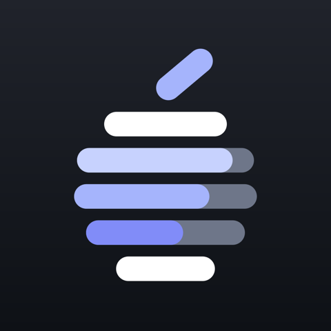

Seit dem Update sieht Linup anders aus. Wie findest du es?
Dauert keine Minute. Deine Antworten werden nicht mit deinem Konto verknüpft.
Impressum · Datenschutz
Ein Stern heißt gar nicht, fünf heißt richtig gut.
Was gefällt dir besser? Denk an die ganze App, nicht nur an das Symbol.
Was sollen wir am Design noch ändern?
Das Feld darf auch leer bleiben.
Deine Antwort ist angekommen. Sie hilft uns beim nächsten Update.